<!DOCTYPE html>
<html lang="uk">

<head>
    <meta charset="UTF-8">
    <meta name="viewport" content="width=device-width, initial-scale=1.0">
    <title>Kamianets-Podilskyi</title>
    <link rel="preconnect" href="https://fonts.googleapis.com">
    <!-- <link rel="preconnect" href="https://fonts.gstatic.com" crossorigin> -->
    <link
        href="https://fonts.googleapis.com/css2?family=Cormorant+Infant:ital,wght@0,300;0,400;0,500;0,600;0,700;1,300;1,400;1,500;1,600;1,700&family=Great+Vibes&display=swap"
        rel="stylesheet">
    <!-- <link href="https://fonts.googleapis.com/css2?family=Matemasie&family=Poppins:ital,wght@0,100;0,200;0,300;0,400;0,500;0,600;0,700;0,800;0,900;1,100;1,200;1,300;1,400;1,500;1,600;1,700;1,800;1,900&display=swap" rel="stylesheet"> -->
    <link href="https://fonts.googleapis.com/css2?family=Great+Vibes&display=swap" rel="stylesheet">
    <link rel="stylesheet" href="./Style/style.css">
    <link rel="stylesheet" href="./Style/media.css">
</head>

<body>
    <!-- <header>
        <div class="header">
            <nav class="navigation nav--visible">
                <div class="nav_wrapper">
                    <button aria-label="Close navigation" class="close-button nav__button close-button--visible">
                        <span class="close-button__circle-wrapper">
                            <svg xmlns="http://www.w3.org/2000/svg" fill="none" viewBox="0 0 40 40"
                                class="close-button__circle">
                                <circle cx="20" cy="20" r="19.5" opacity=".5"></circle>
                            </svg>
                        </span>
                        <svg xmlns="http://www.w3.org/2000/svg" fill="none" viewBox="0 0 10 10"
                            class="close-button__cross--black close-button__cross">
                            <path d="M1.41431.707107l7.7781746 7.7781746-.70710679.70710677-7.7781746-7.77817459z">
                            </path>
                            <path d="M.707351 8.48535L8.4855256.7071754l.70710677.70710679-7.77817459 7.7781746z">
                            </path>
                        </svg>
                    </button>
                    <div class="navigation_main">
                        <button><a href="#">Про Кам’янець</a></button>
                        <button><a href="#">Цікаві місця</a></button>
                        <button><a href="#">Готелі</a></button>
                        <button><a href="#">Ресторани</a></button>
                        <button><a href="#">Кафе та бари</a></button>
                    </div>
                </div>
            </nav>

            <button class="header_toggle">
                <span class="header__label">Menu</span>
                <div class="header_burger">
                    
                </div>
            </button>

            <div class="header_logo">
                
            </div>

            <button class="music" onclick="audio.play();">Music
                
            </button>

        </div>
    </header> -->

    <!-- <div class="border">
        <div></div>
    </div>

    <main>
        <section class="section_one">
            <div class="background">
                <h2>СТАРА ФОРТЕЦЯ</h2>
            </div>
        </section>

        <section class="section_two">
            <h2 class="h_name">Кам’янець-Подільський</h2>
            <div class="text_one">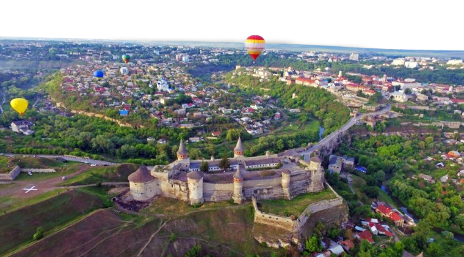<a class="a_name"
                    href="https://uk.wikipedia.org/wiki/%D0%9A%D0%B0%D0%BC%27%D1%8F%D0%BD%D0%B5%D1%86%D1%8C-%D0%9F%D0%BE%D0%B4%D1%96%D0%BB%D1%8C%D1%81%D1%8C%D0%BA%D0%B8%D0%B9">Кам'янець-Подільський</a>
                — одне з найдавніших міст України, (колишні назви — Кам'янець, у 1795—1944 роках — Кам'янець-Подільськ)
                — місто на південному-заході України, на Поділлі, одне з двох найбільших міст Хмельницької області,
                адміністративний, політичний, релігійний центр Кам'янець-Подільського району та Кам'янець-Подільської
                міської громади. Місто розташоване на берегах річки Смотрич. Місто магдебурзького права, один з головних
                центрів
                історичного регіону Поділля.
            </div>
            <div class="text_two">Королівське місто в складі Речі Посполитої, історично головна
                адміністративно-територіальна одиниця Західного Поділля, з 22 березня 1919 по листопад 1920 року —
                столиця УНР, колишній обласний центр Кам'янець-Подільської області (1937—1954), з перервами місто було
                центром: князівства, воєводства, намісництва, губернії, землі, округу, області, району. Центр
                римо-католицької церкви Кам'янець-Подільської дієцезії (1378), Кам'янець-Подільської єпархії
                греко-католицької церкви (2015) та Кам'янець-Подільської єпархії православної церкви України (2024).
                Місто вважають значним українським фестивальним осередком в Західній Україні та неофіційною столицею
                українського повітроплавання. Входить до всеукраїнської Асоціації міст. Має свій <a class="a_name"
                    href="https://uk.wikipedia.org/wiki/%D0%93%D0%B5%D1%80%D0%B1_%D0%9A%D0%B0%D0%BC%27%D1%8F%D0%BD%D1%86%D1%8F-%D0%9F%D0%BE%D0%B4%D1%96%D0%BB%D1%8C%D1%81%D1%8C%D0%BA%D0%BE%D0%B3%D0%BE">герб</a>
                та <a class="a_name"
                    href="https://uk.wikipedia.org/wiki/%D0%9F%D1%80%D0%B0%D0%BF%D0%BE%D1%80_%D0%9A%D0%B0%D0%BC%27%D1%8F%D0%BD%D1%86%D1%8F-%D0%9F%D0%BE%D0%B4%D1%96%D0%BB%D1%8C%D1%81%D1%8C%D0%BA%D0%BE%D0%B3%D0%BE">прапор</a>.
            </div>
            <div class="text_two">Також у Кам'янці-Подільському знаходяться численні історико-архітектурні пам'ятки —
                Національний історико-архітектурний заповідник, Історичний музей-заповідник, Фортеця (XIV—XVI століття,
                перебудована у XVII—XVIII столітті), Петропавлівський кафедральний костел (XVI століття), Костел святого
                Миколая (XV—XVIII століття), дерев'яна Хрестовоздвиженська церква (XVIII століття), унікальні кам'яниці
                епохи Ренесансу (XVI—XVIII століття), Дзвіниця святого Степаноса (XV—XVI століття), Башта Стефана
                Баторія (XVI століття) тощо. Місто занесене до попереднього списку Всесвітньої спадщини ЮНЕСКО.
            </div>
        </section>

        <section class="section_three">
            <h2 class="h_name">Цікаві місця</h2>

            <div class="text_three">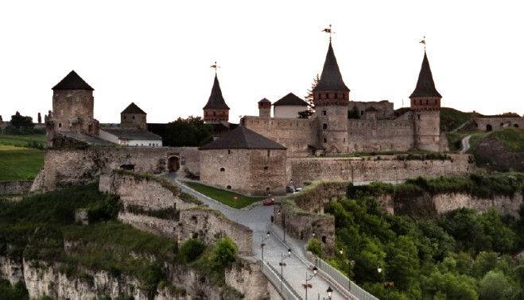<a class="a_name"
                    href="https://uk.wikipedia.org/w/index.php?title=%D0%9A%D0%B0%D0%BC%27%D1%8F%D0%BD%D0%B5%D1%86%D1%8C-%D0%9F%D0%BE%D0%B4%D1%96%D0%BB%D1%8C%D1%81%D1%8C%D0%BA%D0%B0_%D1%84%D0%BE%D1%80%D1%82%D0%B5%D1%86%D1%8F&oldid=43599531">Кам'яне́ць-Поді́льська
                    форте́ця</a> — фортеця у місті Кам'янець-Подільський. Відома з XIV століття як важлива оборонна
                споруда Східної Європи та частина оборонної системи міста Кам'янець, колишньої столиці Подільського
                князівства XIV–XV століть, Подільського воєводства XV–XVIII століть, а далі Подільської губернії
                (1793–1925 pp.). Фортеця є складовою частиною Національного історико-архітектурного заповідника
                «Кам'янець», що належить до «7 чудес України».
            </div>

            <div class="text_two">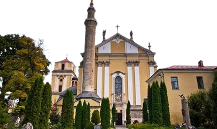<a
                    class="a_name"
                    href="https://uk.wikipedia.org/wiki/%D0%9A%D0%B0%D1%84%D0%B5%D0%B4%D1%80%D0%B0%D0%BB%D1%8C%D0%BD%D0%B8%D0%B9_%D0%BA%D0%BE%D1%81%D1%82%D0%B5%D0%BB_%D1%81%D0%B2%D1%8F%D1%82%D0%B8%D1%85_%D0%B0%D0%BF%D0%BE%D1%81%D1%82%D0%BE%D0%BB%D1%96%D0%B2_%D0%9F%D0%B5%D1%82%D1%80%D0%B0_%D1%96_%D0%9F%D0%B0%D0%B2%D0%BB%D0%B0_(%D0%9A%D0%B0%D0%BC%27%D1%8F%D0%BD%D0%B5%D1%86%D1%8C-%D0%9F%D0%BE%D0%B4%D1%96%D0%BB%D1%8C%D1%81%D1%8C%D0%BA%D0%B8%D0%B9)">Кафедральний
                    костел святих Апостолів Петра і Павла в Кам'янці-Подільському </a>(Катедра Св. Апостолів Петра і
                Павла) — чинний кафедральний католицький костел у місті Кам'янці-Подільському (Хмельницька область).
                Визначна пам'ятка історії культури та архітектури України, одна з головних туристичних атракцій міста.

                Архітектурний ансамбль Костелу святих Апостолів Петра і Павла охоплює: власне костел,дзвіницю,
                тріумфальну арку та мінарет. Містить риси архітектури ренесансу, бароко,неоготики.
            </div>

            <div class="text_three">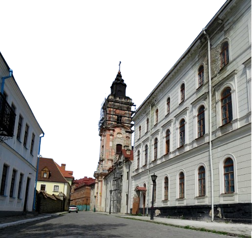<a class="a_name"
                    href="https://uk.wikipedia.org/w/index.php?title=%D0%9A%D0%B0%D0%BC%27%D1%8F%D0%BD%D0%B5%D1%86%D1%8C-%D0%9F%D0%BE%D0%B4%D1%96%D0%BB%D1%8C%D1%81%D1%8C%D0%BA%D0%B0_%D1%84%D0%BE%D1%80%D1%82%D0%B5%D1%86%D1%8F&oldid=43599531">Костел
                    Святого Миколая і монастир домініканців </a>(деякий час мечеть Рабії Гюльнуш) — зразок пам'ятки
                архітектури 15—18 століть в місті Кам'янець-Подільський (нині Хмельницька область, Україна),
                архітектурний образ якої складався впродовж століть з нашаруваннями різних стилістичних систем. Зліва
                від входу до Костелу, колишній будинок Потоцьких, меценатів храму, а справа – будівля келій монастиря
                домініканців. До комплексу входять ще трапезна та кам’яна огорожа з брамою.
                <div class="text_two">У 1370 р. костел Святого Миколая зводять із дерева, а вже через півстоліття, після
                    потужної пожежі, у
                    якій вціліла лише ікона Богородиці, відбудовують у камені.
                </div>
                <div class="text_two">
                    Під час турецького панування він стає другою за важливістю мечеттю міста, яка призначалася для
                    улюбленої
                    дружини султана Махмета IV. У храмі з’являється мармуровий амвон.
                    У XVII ст. костел розквітає завдяки реконструкції під керівництвом Яна де Вітте на кошти Міхала
                    Потоцького.
                </div>
                <div class="text_two">
                    1994-1997 р.: храм потерпає від дощів та вітрів, втрачаючи усю свою історичну красу та чарівність,
                    бо
                    залишився без даху, який згорів через людську недбалість.
                    1998 р.: святиню по крихтах починають відроджувати отці Пауліни, які й до теперішнього часу правлять
                    меси у відреставрованому комплексі Домініканського монастиря.
                </div>                
            </div>
            <div class="text_three">
                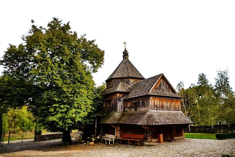
                <a class="a_name"
                    href="https://uk.wikipedia.org/wiki/%D0%A5%D1%80%D0%B5%D1%81%D1%82%D0%BE%D0%B2%D0%BE%D0%B7%D0%B4%D0%B2%D0%B8%D0%B6%D0%B5%D0%BD%D1%81%D1%8C%D0%BA%D0%B0_%D1%86%D0%B5%D1%80%D0%BA%D0%B2%D0%B0_(%D0%9A%D0%B0%D0%BC%27%D1%8F%D0%BD%D0%B5%D1%86%D1%8C-%D0%9F%D0%BE%D0%B4%D1%96%D0%BB%D1%8C%D1%81%D1%8C%D0%BA%D0%B8%D0%B9)">Хрестовоздви́женська
                    це́рква</a> — дерев'яна церква в Кам'янці-Подільському під стінами Старої фортеці, на прибережній
                смузі річки Смотрич в урочищі Карвасари.
                <div class="text_two">За легендою, заснувати православну церкву під стінами кам'янецької фортеці
                    запропонував гетьман Петро Конашевич-Сагайдачний. Поранений у Хотинській битві 1621 року, гетьман на
                    шляху до Києва проїжджав через Кам'янець-Подільський. Побачивши мури фортеці, він подумав, що їхня
                    захисна сила стане ще міцнішою, якщо їх підпиратимуть не тільки потужні скелі, а й віра. Тоді
                    гетьман уявив дерев'яну, легку, як молитва, церкву, яку незабаром після цього і збудували на березі
                    Смотрича.
                </div>
            </div>
            <div class="text_three">
                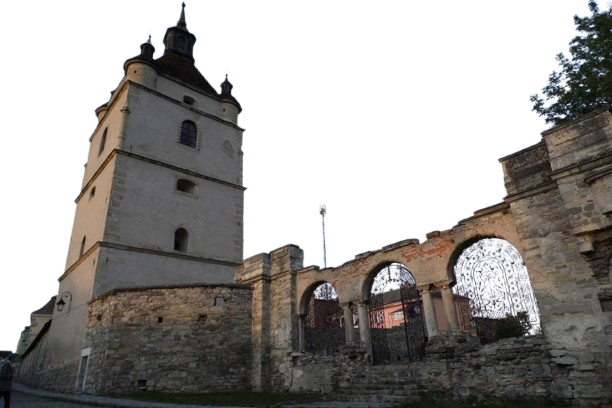
                <a class="a_name"
                    href="https://uk.wikipedia.org/wiki/%D0%94%D0%B7%D0%B2%D1%96%D0%BD%D0%B8%D1%86%D1%8F_%D1%81%D0%B2%D1%8F%D1%82%D0%BE%D0%B3%D0%BE_%D0%A1%D1%82%D0%B5%D0%BF%D0%B0%D0%BD%D0%BE%D1%81%D0%B0">Дзвіни́ця
                    свято́го Степа́носа </a>(також Вірме́нська дзвіни́ця) — дзвіниця XV — XVI століття, розташована у
                вірменському кварталі міста Кам'янець-Подільський. Була частиною вірменського собору св. Миколая (XV
                століття), який не зберігся до наших днів. Деякий час в дзвіниці перебувала легендарна ікона Вірменської
                Богородиці, дуже шанована католиками, православними та послідовниками вірменської церкви.
                <div class="text_two">У період турецької окупації разом із церквою була пошкоджена також дзвіниця,
                    дзвони якої були викрадені. Після відходу турків до міста повернули ікону Вірменської Богородиці.
                    Вірменські церкви святого Миколая та Благовіщення перебували у зруйнованому стані, тому 22 травня
                    1700 року ікона була встановлена в каплиці святого Степаноса, яку нашвидкоруч збудовали у дзвіниці
                    церкви святого Миколая.
                </div>
                <div class="text_two">В XIX столітті дзвіниця мала два дзвони: менший 1701 року та більший 1722 року.
                    Під час Першої та Другої світових воєн дзвіниця була сильно пошкоджена. У 1958 році Комітет з
                    охорони давнини Української РСР відновив дзвіницю та оголосив її пам'яткою, що знаходиться під
                    захистом держави.
                </div>
            </div>
            <div class="text_three">
                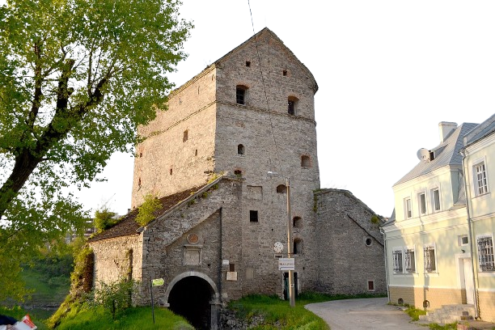
                <a class="a_name"
                    href="https://uk.wikipedia.org/wiki/%D0%91%D0%B0%D1%88%D1%82%D0%B0_%D0%A1%D1%82%D0%B5%D1%84%D0%B0%D0%BD%D0%B0_%D0%91%D0%B0%D1%82%D0%BE%D1%80%D1%96%D1%8F_(%D0%9A%D0%B0%D0%BC%27%D1%8F%D0%BD%D0%B5%D1%86%D1%8C-%D0%9F%D0%BE%D0%B4%D1%96%D0%BB%D1%8C%D1%81%D1%8C%D0%BA%D0%B8%D0%B9)">Ба́шта
                    Стефа́на Бато́рія</a> — найпотужніша з усіх башт у Кам'янці-Подільському. Інші назви — Королівська,
                Кушнірська, Семиповерхова. Пам'ятка містобудування та архітектури України національного значення.
                Фахівцями башту визнано одним із видатних творів оборонного зодчества 16 століття.
                <div class="text_two">Башта Стефана Баторія охороняла північну частину півострова, утвореного петлею
                    Смотрича, на якому розташоване нинішнє Старе місто Кам'янця-Подільського. Башта виконувала роль
                    надбрамної і одночасно могла обстрілювати весь простір північної частини міста з прилеглим каньйоном
                    Смотрича.
                </div>
                <div class="text_two">
                    Башта Стефана Баторія з'явилася на місці давньої міської брами 13 століття. Її збудовано у 1564—1565
                    роках під керівництвом начальника кам'янецької фортифікації Матвія Галичанина. Первісно башта була
                    п'ятиярусною, мала еліптичну форму.
                </div>
            </div>
            <div class="text_three">
                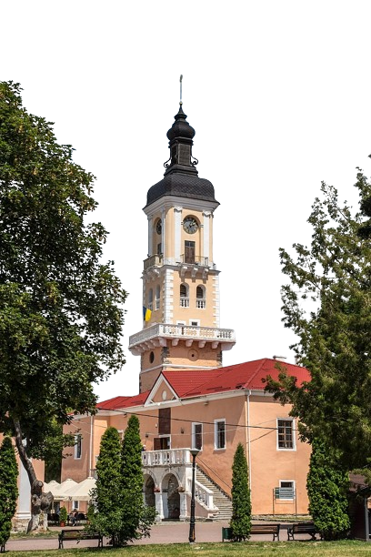
                <a class="a_name"
                    href="https://uk.wikipedia.org/wiki/%D0%91%D1%83%D0%B4%D0%B8%D0%BD%D0%BE%D0%BA_%D0%BF%D0%BE%D0%BB%D1%8C%D1%81%D1%8C%D0%BA%D0%BE%D0%B3%D0%BE_%D0%BC%D0%B0%D0%B3%D1%96%D1%81%D1%82%D1%80%D0%B0%D1%82%D1%83">Буди́нок
                    по́льського магістра́ту (розмовне Ра́туша)</a> в Кам'янці-Подільському (пол. Ratusz Polski, Ratusz
                Lacki) — ансамбль ратуші колишнього польського магістрату (з 1703 року — українсько-польського) міста
                Кам'янця-Подільського, що в Хмельницькій області. Цікавий сплав різностильових нашарувань — ренесансу,
                бароко, ампіру — на основі первісної готичної споруди. Розташований за адресою: площа Польський ринок 1.
                <div class="text_two">До 1793 року у будинку засідав польський і українсько-польський (з 1703 року)
                    магістрат (за винятком 1672—1699 років, коли містом володіли турки). В XVII столітті у пивницях
                    ратуші містилися камери для тортур інквізиторського суду. За часів російської займанщини в ансамблі
                    ратуші розташовувалися магістрат і міська управа. Протягом 1870—1917 років у Будинку магістрату було
                    міське поліцейське управління, а підвали використовували для попереднього ув'язнення затриманих.
                </div>
                <div class="text_two">Після Другої світової війни проведено реконструкцію ансамблю (завершено у 1956
                    році). В 1950 роках приміщення ратуші займали пожежники.
                    Від 1967 в Будинку магістрату вперше розміщено музейні експозиції. У травні 2002 року на першому
                    поверсі ратуші місцевий підприємець Артур Гаспарян відкрив кафе «Ратуша». В 2003—2004 роках ансамбль
                    повністю реконструйовано, збільшено експозиційні площі.
                </div>
            </div>
            <div class="text_three">
                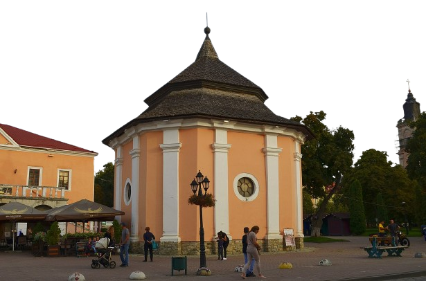
                <a class="a_name"
                    href="https://uk.wikipedia.org/wiki/%D0%92%D1%96%D1%80%D0%BC%D0%B5%D0%BD%D1%81%D1%8C%D0%BA%D0%B0_%D0%BA%D1%80%D0%B8%D0%BD%D0%B8%D1%86%D1%8F">Вірменська
                    криниця</a> (також Вірменський колодязь, або Міська криниця) — пам'ятка архітектури в місті
                Кам'янець-Подільський, розташована в центрі Старого міста поруч з Міською ратушею. Криниця, підземна
                частина пам'ятки, як вважається, була вибита у суцільній скелі місцевими вірменами у 1638 році. Згодом
                над криницею було зведено восьмигранний павільйон в стилі бароко. Нині споруда є об'єктом
                Кам'янець-Подільського державного історичного музею-заповідника і має статус пам'ятки національного
                значення.
                <div class="text_two">Вірмени почали селитися в Кам'янці у XI столітті, а у XVII столітті тут вже
                    проживало 1200 вірменських сімей. Відомо, що вірменська громада брала участь у міських справах,
                    зокрема, для поліпшення санітарного стану міста виділяла кошти для будівництва каналів для стоку
                    води, бруківок. За легендою, на початку XVII століття заможний вірменський купець Нарсес (Нарзес)
                    пожертвував велику суму грошей на будівництво у Кам'янці водогону. Однак водогін не було прокладено,
                    в більша частина грошей зникла. Король Владислав IV Ваза у 1638 році на Варшавському сеймі дав
                    розпорядження «зобов'язати кам'янецьких вірмен виконати волю пожертвувателя». Припускають, що
                    Вірменський колодязь вирубано у скелі вірменами за цим розпорядженням короля. У 1672 році комендант
                    міста Ян де Вітте звів над криницею кам'яний павільйон у стилі пізнього бароко.
                    Будівництво криниці було надзвичайно важкою справою, оскільки все Старе містоскладається із
                    суцільного каменю. Проте на кінець XVII століття вона вже була вибитаглибиною в 40 метрів та
                    діаметром в 3 метри. Вода у криниці виявилася непридатноюдля вживання (солі, що вимиваються із
                    скелі, роблять її дуже гіркою)[3], заісторичним джерелами воду з криниці час від часу
                    використовували для інших потреб.
                </div>
                <div class="text_two">
                    Під час Другої світової війни надбудова криниці сильно постраждала. У 1956 році пам'ятку
                    реставрували, тоді її дах набув трохи складнішої форми, двоярусної.
                    Вірменську криницю довгий час використовували як міський склад, а у 1960-ті роки пам'ятка була
                    складом кінопрокату. Нині приміщення використовується як виставкова зала музею.
                </div>
            </div>
            <div class="text_three">
                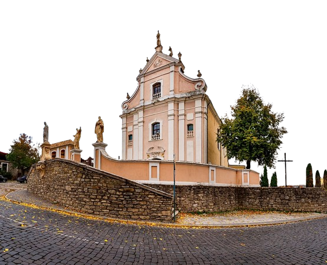
                <a class="a_name"
                    href="https://uk.wikipedia.org/wiki/%D0%A6%D0%B5%D1%80%D0%BA%D0%B2%D0%B0_%D1%81%D0%B2%D1%8F%D1%82%D0%BE%D0%B3%D0%BE_%D0%99%D0%BE%D1%81%D0%B0%D1%84%D0%B0%D1%82%D0%B0_(%D0%9A%D0%B0%D0%BC%27%D1%8F%D0%BD%D0%B5%D1%86%D1%8C-%D0%9F%D0%BE%D0%B4%D1%96%D0%BB%D1%8C%D1%81%D1%8C%D0%BA%D0%B8%D0%B9)">Церква
                    священомучика Йосафата </a>(колишній Тринітарський костел або костел Святої Трійці) — пам'ятка
                сакральної архітектури доби пізнього рококо у місті Кам'янець-Подільський.
                <div class="text_two">Перші ченці-тринітарії прийшли до міста Кам'янець-Подільський в 1699 році, коли
                    місто залишала турецька армія згідно умов Карловацького мирного договору.
                    Спочатку жебракуючому ордену комісари віддали споруджену біля Лядських воріт в османський період
                    мечеть, будівля якої була сильно пошкоджена повінню, а близьке розташування до заплави Смотрича не
                    обіцяло спокійного існування. Незабаром тринітарії оселилися на вершині плато біля Замкового мосту,
                    який один з братів по імені Михайло отримав у 1696 році у спадок від кам'янецького міщанина
                    Хоцимирського.
                </div>
                <div class="text_two">В 1712 році на кошти від пожертв спорудили дерев'яний костел, в той час як будівлі
                    маєтку оселилися ченці. В 1750 році знову коштом пожертв розпочали будівництво мурованого з каменю
                    Тринітарського монастирського комплексу. В 1765 році почали експлуатацію кляшторних житлових і
                    господарських будівель, у 1780 році єпископ Адам Станіслав Красінський освятив храм на честь Святої
                    Трійці.
                </div>
                <div class="text_two"> Костел був реставрований у період 1977—1984 років. Нині в колишньому костелі
                    знаходиться греко-католицька церква св. Йосафата.
                </div>
            </div>
            <div class="text_three">
                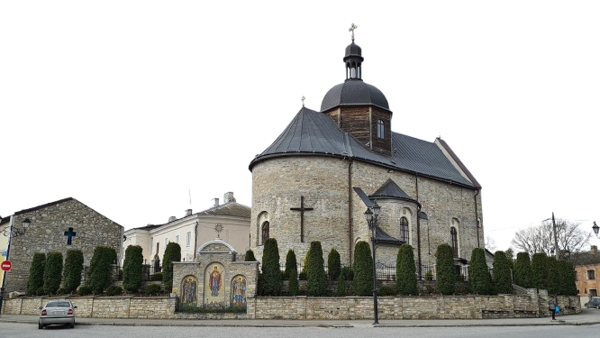
                <a class="a_name"
                    href="https://uk.wikipedia.org/wiki/%D0%92%D1%96%D1%80%D0%BC%D0%B5%D0%BD%D1%81%D1%8C%D0%BA%D0%B0_%D1%86%D0%B5%D1%80%D0%BA%D0%B2%D0%B0_%D1%81%D0%B2%D1%8F%D1%82%D0%BE%D0%B3%D0%BE_%D0%9C%D0%B8%D0%BA%D0%BE%D0%BB%D0%B0%D1%8F_(%D0%9A%D0%B0%D0%BC%27%D1%8F%D0%BD%D0%B5%D1%86%D1%8C-%D0%9F%D0%BE%D0%B4%D1%96%D0%BB%D1%8C%D1%81%D1%8C%D0%BA%D0%B8%D0%B9)">Храм
                    Пресвятої Трійці</a> (Церква Пресвятої Трійці василіянського монастиря) — чинна церква УГКЦ в
                Кам'янці-Подільському. Розташована при в'їзді до Старого міста біля Новопланового мосту.
                <div class="text_two">Перша письмова згадка про храм відноситься до 1582 року, у зв'язку з передачею
                    міщанкою Гапкою Табковою у власність Троїцької церкві своєї садиби.
                    Під час панування у місті турків храм було перероблено на мечеть. На початку XVIII ст. з виходом
                    турків з Кам'янця і встановленням польської влади храм був переданий уніатам. У 1722 році єпископ
                    Атанасій Шептицький передав храм монахам Чину Св. Василія, які заснували при ньому монастир.
                    Офіційною датою заснування вважається 22 травня 1722 р. Чин Василіян діяв при храмі до 1795 року.
                    При ІІ розділі Польщі землі Кам'янеччини були анексовані Росією. Разом з цим храм було переосвячено
                    у православний.
                </div>
                <div class="text_two">
                    У 1935 році у рамках боротьби радянського уряду із релігією храм було розібрано.
                </div>
                <div class="text_two">
                    3 березня 1995 р. почалася віднова храму. Були проведені розкопки і дослідження фундаментів храму.
                    23 вересня 1996 р. кардинал Любомир Гузар заснував монастир. Першим настоятелем було призначено бр.
                    Давида Кулинича, василіянина. З 1 вересня 2005 р. настоятелем монастиря було призначено о. Йосифа
                    Будая. За п'ять років василіяни повністю закінчили відтворення будівлі та оздоблення храму і
                    прилеглої території.
                </div>
                <div class="text_two">
                    10 липня 2010 року Храм Пресвятої Трійці освятив Василій Семенюк — єпископ
                    Тернопільсько-Зборівський, УГКЦ. Архітектором, який розробив проєкт відновлення храму, є Володимир
                    Бевз.
                </div>
            </div>
            <div class="text_three">
                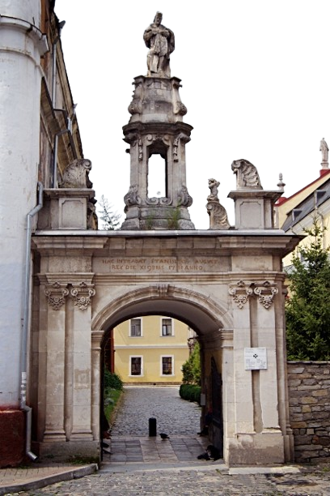
                <a class="a_name"
                    href="https://uk.wikipedia.org/wiki/Тріумфальна_арка_(Кам%27янець-Подільський)">Тріумфальна арка
                </a>Тріумфальна арка — одна зі складових архітектурного ансамблю Кафедрального костелу Святих апостолів
                Петра і Павла міста в Кам'янця-Подільського. Високохудожня споруда, веде на подвір'я Кафедрального
                костелу.
                <div class="text_two">Тріумфальна арка (брама) є однією із найвідоміших кам'янецьких пам'яток. Це
                    остання споруда Татарської вулиці, що знаходиться в Старому місті і збудована на пам'ять про
                    останній візит до Кам'янця останнього польського короля — Станіслава Августа Понятовського. Вона
                    веде на подвір'я до Кафедрального костелу. На стіні арки є напис латинською мовою (зокрема, «тут
                    проходив король Станіслав Август 11 листопада 1781 року»). На думку Ольги Пламеницької (книга
                    «Християнські святині Кам'янця-Подільського»), автором споруди був Ян де Вітте.

                    Збудована з цегли й облицьована білокам'яними тесаними плитами. Витримана в характері античних
                    тріумфальних арок. Велику роль у художній виразності відіграє скульптурне завершення брами. А саме —
                    статуї 4-х янголят по кутах і статуя святого Яна Непомука в центрі, який вважається покровителем
                    мостів, доброї слави та щирої сповіді (брама — своєрідний міст між світом і небесами).
                </div>
            </div>
            <div class="text_three">
                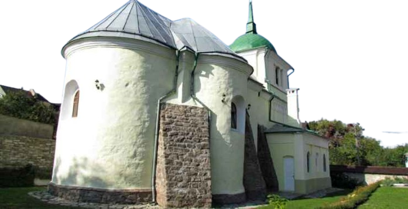
                <a class="a_name">Церква св. ап. Петра і Павла</a> Найдавніша писемна згадка про храм датована 1513 р.
                На той час він був дерев’яним. Та вже в 1580 р. на його місці звели кам’яну церкву. Її стіни були
                розписані фресками, які містили сюжети з апокаліпсису, життя св. Стефана й Страшного суду. За турків
                церкву передали католикам. Це викликало негативну реакцію в української громади. Їхня делегація, яка
                з’явилася до великого візира Ахмеда Кюпрюлю, заявила, що краще б султан перетворив церкви на «приміщення
                для псів, ніж віддає їх полякам». У ХVІІІ ст. сакральна споруда мала двосхилий дах, а дзвіниця
                розташовувалася на воротах. При храмі існували 3 братства. У 1795 р., після того, як частина Поділля
                відійшла до Російської імперії, церква стала православною. У 1834 р. до храму прибудували дзвіницю.
                <div class="text_two">У 1991 р. церкву передали громаді Української православної церкви Київського
                    патріархату.
                </div>
            </div>
            <div class="text_three">
                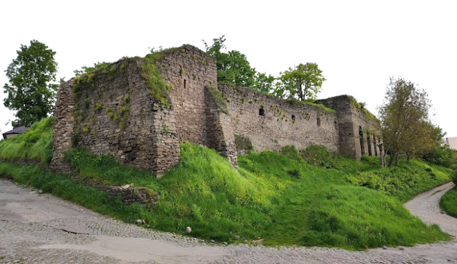
                <a class="a_name" href="https://uk.wikipedia.org/wiki/Турецький_бастіон">Туре́цький бастіо́н </a>(інші
                назви — гарматний рондель, дівочий рондель, форт Дальке) — оборонна споруда в Старому місті
                Кам'янця-Подільського. Пам'ятка містобудування та архітектури України національного значення. Як
                зазначають фахівці, «в будівельній історії фортифікації міста пам'ятка є одним із прикладів логічного
                завершення стратегічно важливого на різних етапах оборонного пункту». Бастіон входив до системи
                північно-західних укріплень Кам'янця-Подільського (ці укріплення мають ще назву Верхня Польська брама).
                Турецький бастіон — значна за розмірами аркова споруда. Має чотири прогони.
                <div class="text_two">Укріплення в цьому місці, надзвичайно зручному для обстрілу дороги, що веде до
                    міста, існували раніше. Турки, які 1672 року захопили Кам'янець-Подільський, удосконалили його
                    фортифікацію, використавши камінь з поруйнованого монастиря домініканок. Кам'янчани з іронією
                    називали укріплення «дівочими горщиками».
                </div>
                <div class="text_two">1753 року німецький інженер-фортифікатор Кристіан Дальке, який був комендантом
                    фортеці, провів реконструкцію укріплень. Звідси ще одна їх назва — форт Дальке. На початку 19
                    століття за проектом військового інженера Дементія Мелещенова на бастіоні було збудовано провіантний
                    магазин (склад). Кам'яні склепіння казематних приміщень, що стали руйнуватися на початку 19
                    століття, спочатку зміщнили кам'яними та дерев'яними стовпами, а потім повністю переклали. Після
                    цього приміщення казематів стали використовувати під склади.
                </div>
                <div class="text_two">1856 року місцевий театрал Ян Пекарський пристосував магазин на бастіоні під
                    театр. Перші п'ять років п'єси ставилися польською мовою, а з 1861 року — російською. Київський
                    журналіст, який 1863 року відвідав Кам'янець-Подільський, писав: „Ще одне з громадських задоволень —
                    театр — був майже зачинений. Він виставляв найсентиментальніші з російських п'єс — як от
                    «Параша-сибірячка». Місця залишалися порожніми, крім місць для деяких представницьких осіб міста та
                    військових, але й там було невесело. Театр розміщувався в якомусь будинку зі старовинних прибудов до
                    міського муру, буфет тісний і нікчемний — повна нудьга.
                </div>
                <div class="text_two">У травні 1918 року театр згорів. Тепер тільки з фотографії Степана Ніколаєва можна
                    побачити, яким був тодішній кам'янецький театр. Разом із ним зник і невеликий Театральний провулок,
                    який проходив тут.
                    Турецький бастіон суцільним кам'яним муром з'єднувався з Вітряною брамою. На початку 20 століття,
                    щоб поліпшити умови проїзду, ділянку оборонного муру, що примикав до Вітряної брами із заходу,
                    розібрали на ширину проїзду.
                    1965 року на бастіоні проведено консерваційні роботи.
                </div>
            </div>
            <div class="text_three">
                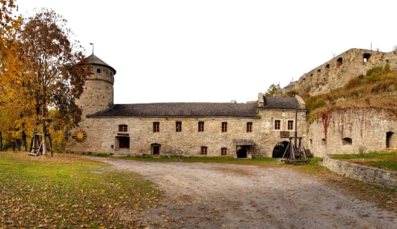
                <a class="a_name" href="https://uk.wikipedia.org/wiki/Руська_брама_(Кам%27янець-Подільський)">Руська
                    брама</a> з баштами і укріпленнями — комплекс споруд XV століття. Руська брама розташована в яру р.
                Смотрич. Точна дата побудови воріт невідома. Дослідники дотримуються думки, що ворота були збудовані XV
                -XVI ст. Фортифікаційні споруди складалися з 4 оборонних башт, барбакана і оборонних мурів довжиною 230
                м, які перетинали долину річки, в комплекс Руської брами входили також шлюзи. На початку XIX ст. Руські
                ворота, як і замок втратили своє оборонне значення і почали використовуватися як склади. Кам'янецьку
                фортецю скасовано 1812 року.
                <div class="text_two">1717 року Руську браму було реставровано. 1765 року король Станіслав Август ІІ
                    Понятовський пожертвував зі своїх коштів чималу суму на ремонт Кам'янецьких фортифікацій, про що на
                    пам'ять було вибито медаль. Також браму було реставровано 1960 року.
                </div>
            </div>
            <div class="text_three">
                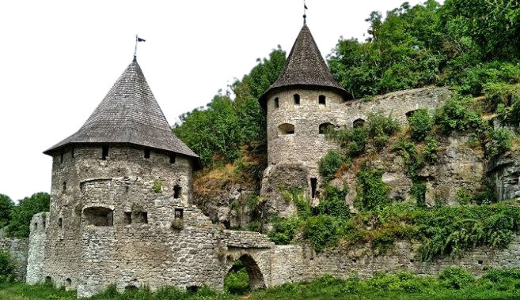
                <a class="a_name" href="https://uk.wikipedia.org/wiki/Нижня_Польська_брама">Польська брама </a>(або
                Нижня Польська брама) — один з в'їздів до Старого міста Кам'янця-Подільського. Розташована у каньйоні
                річки Смотрич і була одним з двох в'їздів до Старого міста Кам'яниця на Поділлі. Дорога від неї вела до
                Верхньої Польської брами. Комплекс брами складався з Надбрамної башти з Барбаканом, вартівнею,
                прискельним казематом та розташованою над ними Наскельною баштою. Прибережний мур вів до Великої
                Прибережної башти. Від неї до прилеглої скелі каньйону йшов мур з проїзною брамою, а через русло
                Смотрича до протилеглої скелі каньйону йшла казематна куртина з двома шлюзами на ріці і баштами Малою
                Прибережною і Настінною. Комплекс брами знаходився за 600 м від Замкового мосту. найдавніші частини
                брами існували на 1470-і роки. До комплексу Нижньої Польської брами відносять башту Захаржевську, що
                знаходилась на скелі на певній віддалі від неї та виконувала роль спостережного пункту понад бродом
                через Смотрич на дорозі з Польських фільварків.
                <div class="text_two">Польська брама була кардинально реконструйована у XVIII ст., коли стару дорогу від
                    броду до брами визнали недостатньо захищеною і потенційно небезпечною для оборони міста. Тоді дорогу
                    на Польських фільварках продовжили майже до брами, облаштувавши проїзд у березі каньйону та звівши
                    міст понад руслом Смотрича. У стіні Прибережного муру вимурували новий в'їзд до внутрішнього двору
                    брами. Тоді проїзд через брами Барбакану і Надбрамної башти втратив своє значення. На 1834 р. рештки
                    шлюзів, двох Прибережних башт були частково розібрані і згодом засипані землею при піднятті рівня
                    дороги та будівництві нового мосту через Смотрич, розміщення якого збережено у сучасній споруді.
                    Надбрамна башта була віднайдена у 1960-х роках і реставрована 1980 р., але її дах згорів 1994 р. На
                    початку 2009 р. частина башти обвалилась. Башта була відновлена з відхиленнями відтворенні її
                    автентичних форм (готична форми арки проїзду, розташування і розмір бійниць).
                </div>
            </div>
            <div class="text_three">
                
                <a class="a_name" href="https://uk.wikipedia.org/wiki/Гончарська_башта">Гончарська башта </a> — належить
                до східної частини міських укріплень Кам’янця-Подільського. Це гарматна башта, дах якої завершується
                ліхтарем-караульнею для дозору. Такі завершення називалися «вишками» і використовувались для
                спостереження за місцевістю та для передачі звісток за допомогою умовних знаків.
                <div class="text_two">Всі припущення про час спорудження башти ґрунтуються виключно на основі натурних
                    обстежень. Вважається, що башта збудована в 1583 р. Про це інформує вмурована в стіні білокам’яна
                    плита з гербом та датою, яку можливо було прочитати ще на початку XIX ст.
                </div>
                <div class="text_two">Розташована на стрімкому схилі каньйону і має 5 ярусів з боку річки та 3 яруси з
                    боку міста (іл.1). Споруда кам’яна, кругла в плані, діаметром по третьому ярусу 13,0 м, а по 5 ярусу
                    — 10,7 м. Висота башти близько 25 м посилювала бойові можливості кругового обстрілу і збільшувало
                    його дальність.
                </div>
                <div class="text_two">Оборонну потужність башти забезпечували бійниці п’ятого ярусу з боку каньйону, які
                    утворювали 180-градусний кут обстрілу протилежного берега каньйону. У зв’язку з необхідністю
                    здійснення далекобійного прицільного вогню на відстань 200 і більше метрів. Артилерійський парк
                    Гончарської башти складався з гармат середнього калібру і, можливо, гаківниць. Бійниці у всіх ярусах
                    зі щоками, що розширюються в обидва боки. Башта була обладнана системою обігріву та каналами виходу
                    порохових газів.
                </div>
            </div>
            <div class="text_three">
                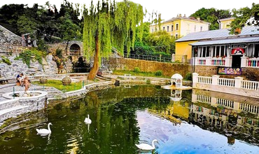
                <a class="a_name" href="http://muzeum.in.ua/skver-%C2%ABlebedyne-ozero%C2%BB.html">Сквер «Лебедине
                    озеро» </a> знаходиться на краю каньйону річки Смотрич. З цієї території відкривається неперевершена
                панорама Старого міста. На кінець минулого століття сквер, що сьогодні має назву «Лебедине озеро», був
                дуже романтичним та цікавим місцем. Багато людей приходять сюди помилуватись цими чарівними птахами. До
                «Лебединого озера» ведуть шляхи з інших скверів: Молодіжного та парку Героїв Євромайдану. Щоб перейти до
                парку Героїв Євромайдану, потрібно піднятись сходами, посеред яких тече вода, породжуючи відчуття
                легкості та постійного руху життя.
            </div>
        </section>

        <section class="section_four">
            <h2 class="h_name">Готелі</h2>
            <div class="text_three"></div>
        </section>
    </main>

    <script type="text/javascript">
        const audio = new Audio();
        audio.setAttribute("loop", "")
        audio.src = "./Music/medieval_1.mp3"
    </script> -->
    <script type="module" src="./Code/html-obgect.js"></script>
    <script type="module" src="./Code/attribute.js"></script>
    <script type="module" src="./Code/tag.js"></script>
    <script type="module" src="./Code/header.js"></script>
    <script type="module" src="./Code/border.js"></script>
    <script type="module" src="./Code/main.js"></script>
    <script type="module" src="./Code/image.js"></script>
    <script type="module" src="./Code/div.js"></script>
    <script type="module" src="./Code/span.js"></script>
    <script type="module" src="./Code/button.js"></script>
    <script type="module" src="./Code/navigation.js"></script>
    <script type="module" src="./Code/section.js"></script>
    <script type="module" src="./Code/heading.js"></script>
    <script type="module" src="./Code/burger-menu.js"></script>
    <script type="module" src="./Code/logo.js"></script>
    <script type="module" src="./Code/audio-player.js"></script>
    <script type="module" src="./Code/main-menu.js"></script>
    <script type="module" src="./Code/title.js"></script>
    <script type="module" src="./Code/index.js"></script>
</body>

</html>